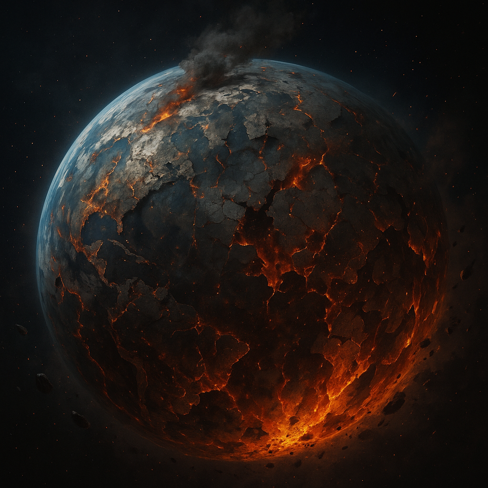

Description
Status: Destroyed (~-100,000 AE)
Classification: Origin World
Sun: yellow star
Moon: unknown
Once the cradle of humanity, Earth was obliterated in a cataclysmic event that erased not only a world, but a unified history. Survivors escaped into deep space. Earth is now myth, mentioned only in encrypted texts and cultural fragments.

Elias Speaks of the Twelve Ships
You ask about the survivors.
Very well—though even now, the truth is scattered, fractured, and buried beneath the pride of a species that refuses to admit it once fell.
When Earth died, it did not die quietly. The cataclysm that consumed it was so complete that even the sky-born records melted into static. The oceans were the first to go—boiled away a hundred millennia before the final ignition. What remained was a furnace world, a shell cracking under its own fury. Humanity’s cradle became its pyre.Yet some fled.
Across the void, twelve great generational vessels slipped into the dark, each carrying fragments of a civilization that no longer remembered how to be whole. They named their ships after the rivers of their lost world—echoes of life flowing through a dead cosmos:
Nile, Amazon, Yangtze, Mississippi, Yenisei, Huanghe, Ob, Parana, Congo, Amur, Lena, Mekong.
Names that meant water… even as their home turned to fire.
For centuries they wandered, guided by propulsion older than the ancestors of the Authority, their trajectories chaotic, their destinations unrecorded. The stars swallowed their paths. Even I cannot retrace all of them. Not anymore.
But a few stories endure.The Ship That Reached Edson
One vessel—Lena, if the old encryptions are accurate—drifted for almost a century before gravity, chance, and desperation brought it to Edson. Its people were tired, their ship failing, their memories worn thin. They landed not because the world was kind, but because it merely did not kill them on sight.
From those first survivors grew the world you now know: fractured cultures, rising kingdoms, myths that disguised their true origins. Time diluted truth into legend, as it always does.
The Ship That Reached Caelion
Another—Yangtze—touched down on Caelion.
Unlike Edson, Caelion did not welcome them. But its cold precision did not destroy them either. It assimilated them. Absorbed them. Shaped them into a society engineered for obedience, efficiency, and silence.
Their descendants forgot the chaos of their ancestors. They embraced the order imposed upon them. They built towers to scrape rationed skies, and a space elevator to remind themselves that ascent was permission, not birthright.
To this day, Caelion claims it was never born from refugees. How amusing.
The Ship That Reached the High-Gravity World
A third ship—its name erased, perhaps intentionally—fell upon a world far harsher. A world where gravity pressed threefold, crushing lungs, bending bones, warping physiology before birth.
The adults could not adapt. But they were clever… and desperate.
They altered the children.
Not through crude machinery—no, the Authority’s arrogance came much later—but through deliberate genetic shaping. Tweaks to muscle density, skeletal reinforcement, neural elasticity. Enough to survive a world that wanted them dead.
Those children survived. Their children thrived. Generation upon generation rose stronger, faster, more resilient than any human before them.
They built their own myths. Their own rites. Their own identity.
And among those born of that world… one day… a child would rise who could shake empires.
The remaining ships vanished into the stellar winds. Perhaps they seeded other worlds. Perhaps they drift still, filled with skeletons and silent archives. Perhaps they found paradises or oblivion.
Even I cannot say with certainty. The universe does not reveal all its secrets— not even to those who can hear its deeper currents.
But this much is true: Humanity did not merely spread across the stars. It fractured. It adapted. It became many things… some of which no longer remember they were ever one.And now, these divergent threads begin to knot together again. History circles back upon itself.>As it always does.